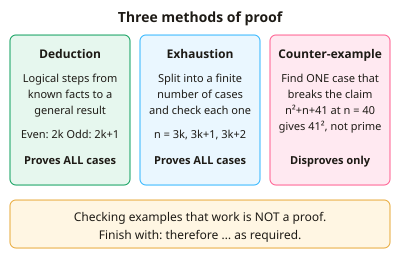

A-level Maths Year 12 · Topic 1
Algebra techniques and graphs
Algebra techniques and graphs builds the algebra fluency you need throughout A-level Maths.
We will write proofs, use index laws and surds, and solve quadratics by every method.
Then we divide polynomials and use the factor theorem, solve simultaneous equations and inequalities, and transform graphs and functions.
- 6 subtopics
- 212 questions
- Free: 1.1 notes and 10 questions
In this topic
- 1.1Proof by deduction, exhaustion and counter-exampleFree below · 36 questions
- 1.2Laws of indices and surds (rationalising denominators)Open in Full Marks · 34 questions
- 1.3Quadratics: factorising, completing the square, quadratic formula and the discriminantOpen in Full Marks · 17 questions
- 1.4Polynomials: algebraic division, factor theorem and remainder theoremOpen in Full Marks · 33 questions
- 1.5Simultaneous equations (linear and quadratic) and inequalities, including graphical and set notationOpen in Full Marks · 43 questions
- 1.6Graphs of functions and transformations; function notation, composite and inverse functions, proportional relationshipsOpen in Full Marks · 49 questions
1.1 · Free notes
Proof by deduction, exhaustion and counter-example

Key points
- Proof by deduction starts from known facts, definitions or algebraic identities and uses logical steps to reach the result. It covers every case, so it is a genuine proof.
- Represent integers algebraically: an even integer is 2k and an odd integer is 2k + 1, where k is an integer. Consecutive integers are n and n + 1.
- When a proof involves two different integers, use different letters (e.g. 2m and 2n). Using the same letter forces the two integers to be equal.
- Finish a deduction by showing the result has the required form, e.g. 2(…) with (…) an integer. Then write a conclusion such as 'therefore … as required'.
- Proof by exhaustion splits the problem into a finite number of cases and checks every one. For example, n² mod 3 can be tested with n = 3k, 3k + 1 and 3k + 2.
- Exhaustion must cover all cases with none missed, and it only works when the number of cases is finite. Case lists must not overlap or leave gaps (e.g. odd/even).
- A counter-example is a single specific case that satisfies the conditions but contradicts the claim. One counter-example is enough to disprove a 'for all' statement.
- Substitute the counter-example and show the working. For 'n² + n + 41 is prime for all n', n = 40 gives 1681 = 41², which is not prime.
- Testing examples is not a proof. Checking n = 1, 2, 3 and finding the statement true does not prove it for all n.
- Useful identities: n³ − n = n(n − 1)(n + 1), a product of three consecutive integers. For inequalities, use (a − b)² ≥ 0 or a completed square being ≥ 0.
- In 'show that' and 'prove that' questions, the algebra must be shown in full. Do not work backwards from the answer unless every step is reversible and you say so.
In more detail
- Worked deduction: the product of two odd numbers: (2m + 1)(2n + 1) = 4mn + 2m + 2n + 1 = 2(2mn + m + n) + 1, which is odd.
- Worked divisibility: n³ − n = (n − 1)n(n + 1) is a product of three consecutive integers, so it contains a multiple of 2 and a multiple of 3, and is divisible by 6.
- Worked exhaustion: squares of numbers ending 0–9 end in 0, 1, 4, 9, 6, 5, 6, 9, 4, 1, so no square number ends in 7.
- Worked counter-example: "if a > b then a² > b²" fails for a = 1, b = −3, since 1 > −3 but 1 < 9.
- Worked show that: x² − 6x + 10 = (x − 3)² + 1 ≥ 1, so it is positive for all real x.
Practice
Proof by deduction, exhaustion and counter-example: 10 questions
Pick an answer to check it, or open the answer for the explanation.
1. If n is an integer, which expression always represents an odd number?
- n + n
- 4n
- 2n + 1
- 2n
Show answer
C: 2n + 1. 2n is a multiple of 2, so 2n + 1 is one more than an even number and is always odd. 2n, 4n and n + n are all even.
2. Which value of n is a counter-example to 'n² + n + 41 is prime for all positive integers n'?
- n = 1
- n = 2
- n = 40
- n = 3
Show answer
C: n = 40. n = 40 gives 1600 + 40 + 41 = 1681 = 41², which is not prime. For n = 1, 2 and 3 the results 43, 47 and 53 are prime, so they do not disprove it.
3. Which line correctly completes a proof that an even integer 2k times any integer m is even?
- 2k × m, which is even for k = 1, 2, 3
- km, which is even as k is even
- 2(km), so even because km is an integer
- 2k + m, so even because 2k is even
Show answer
C: 2(km), so even because km is an integer. 2k × m = 2(km). Since km is an integer, the product is 2 × an integer, which is even. The other options use the wrong algebra or only test examples.
4. To prove by exhaustion that the square of any integer has the form 3k or 3k + 1, which cases are needed?
- n = 3k, 3k + 3 and 3k + 6
- n = 3k, 3k + 1 and 3k + 2
- n = 3k and n = 3k + 1 only
- n = 3k only
Show answer
B: n = 3k, 3k + 1 and 3k + 2. Every integer leaves remainder 0, 1 or 2 on division by 3, so all three cases must be checked. Missing a case means the exhaustion is incomplete.
5. A student checks n = 1, 2, 3, 4 and finds n² + 2 is never a multiple of 4. Which statement is correct?
- This proves it for all n up to 100
- This proves it for all integers n
- This is a proof by exhaustion
- This is not a proof of the general case
Show answer
D: This is not a proof of the general case. A few examples do not prove a general statement. Exhaustion needs all cases covered, such as the cases n even and n odd, not just the first four integers.
6. In a proof that the product of two odd numbers is odd, (2a + 1)(2b + 1) expands to which expression?
- 4ab + 1
- 4ab + 2a + 2b + 1
- 2ab + a + b + 1
- 4ab + 2a + 2b
Show answer
B: 4ab + 2a + 2b + 1. (2a + 1)(2b + 1) = 4ab + 2a + 2b + 1 = 2(2ab + a + b) + 1. This is 2 × an integer + 1, so it is odd.
7. Which pair of irrational numbers is a counter-example to 'the sum of two irrational numbers is irrational'?
- √2 and √3
- √2 and −√2
- π and 1
- √2 and √8
Show answer
B: √2 and −√2. √2 + (−√2) = 0, which is rational. √2 + √3 and √2 + √8 = 3√2 are irrational. Also 1 is rational, so π and 1 is not a pair of irrationals.
8. How should two different even integers be written in a deduction proof?
- 2k only
- 2k and 2k + 1
- 2k and 2k
- 2m and 2n
Show answer
D: 2m and 2n. Different letters allow the integers to take different values. Using 2k twice forces them to be equal, and 2k + 1 is odd.
9. Which value of n is a counter-example to 'if n is prime then n + 1 is even'?
- n = 3
- n = 7
- n = 5
- n = 2
Show answer
D: n = 2. n = 2 is prime but 2 + 1 = 3 is odd. The primes 3, 5 and 7 give 4, 6 and 8, which are even, so they agree with the claim.
10. n is an integer. Which line correctly proves that the sum of three consecutive integers is a multiple of 3?
- n + (n+1) + (n+2) = 3n + 2
- n + 2n + 3n = 6n = 3(2n)
- 1 + 2 + 3 = 6 = 3 × 2
- n + (n+1) + (n+2) = 3n + 3 = 3(n+1)
Show answer
D: n + (n+1) + (n+2) = 3n + 3 = 3(n+1). Three consecutive integers are n, n+1, n+2. Their sum is 3n+3 = 3(n+1), and n+1 is an integer, so the sum is a multiple of 3. Checking 1+2+3 is only one example, so it proves nothing.
Keep going in Full Marks
Full Marks has 36 questions on Proof by deduction, exhaustion and counter-example (26 more than here), set out in practice levels. You also get notes and 3D models for all 6 subtopics of Algebra techniques and graphs, plus games, timed exams and past papers.